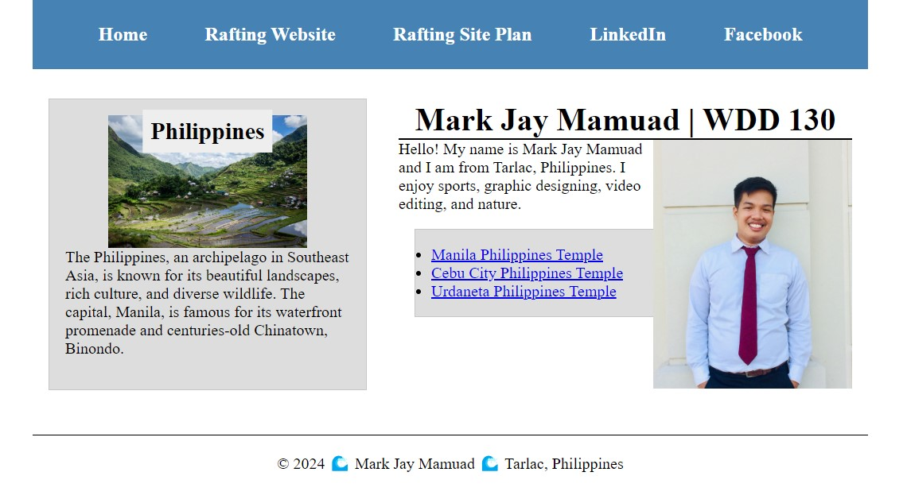

About Me
Hello! I am Mark Jay Mamuad, and this is my home page for WDD 131.
My Projects
Check out my projects related to web development.
Skills
Here are some junior-level skills I've acquired in web development:
- Basic HTML5 and CSS3
- Understanding of responsive web design
- Fundamentals of JavaScript
- Version control using Git and GitHub
- Basic familiarity with CSS frameworks like Bootstrap
- Knowledge of web accessibility principles
- Basic understanding of SEO concepts
- Experience with simple web projects and portfolios
- Ability to debug and troubleshoot basic web issues
- Basic understanding of content management systems (e.g., WordPress)
Resume
Download my resume here.